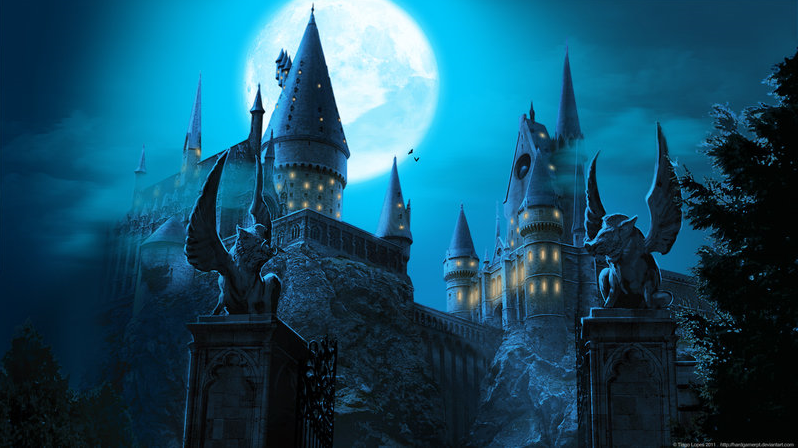
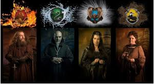
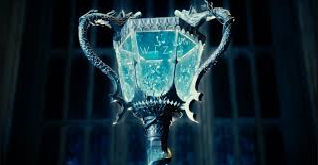

A Escola de Magia e Bruxaria de Hogwarts, ou simplesmente Hogwarts, é um internato de magia para bruxos e bruxas britânicos com idades entre onze e dezessete anos. É o palco principal dos primeiros seis livros da série Harry Potter, de J. K. Rowling, cada livro equivalendo a um ano letivo.
Hogwarts foi fundada por volta de 993 d.C. por dois bruxos, Godric Grifnória e Salazar Sonserina, e duas bruxas, Helga Lufa-Lufa e Rowena Ravenclaw. Cada um deles continha um aspecto de personalidade que queriam nos novos alunos. No entanto, pouco depois da escola ser fundada, Sonserina discutiu com os outros fundadores a respeito da pureza de sangue. Sonserina quis admitir apenas os alunos de puro sangue, enquanto os outros três fundadores discordaram. Sonserina deixou a escola logo depois de construir em segredo a Câmara Secreta. Quando seu verdadeiro herdeiro, o Herdeiro de Sonserina , voltasse à escola, ele ou ela seria capaz de abrir a Câmara e libertar o monstro que lá havia em função de purificar a escola de todos os alunos Nascidos-trouxas.
Cerca de três anos após a fundação da escola, o Torneio Tribruxo teve início entre as três mais prestigiadas escolas mágicas da Europa - a Escola de Magia e Bruxaria de Hogwarts, a Academia de Magia Beauxbatons e o Instituto Durmstrang. O torneio foi considerado a melhor maneira de bruxas e bruxos de diferentes nacionalidades se conhecerem e se socializarem. O torneiro continuou por seis séculos, até que o número de mortes ficou muito alto e o torneio sem continuação.
